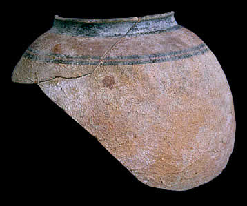

Early settlements in Indus Valley develop into urban civilizationDuring this period, walled settlements were common. Cities were constructed on a grid plan and drainage systems were introduced. Some people living in Indus Valley cities farmed the land, raised animals and were merchants and traders. Other people trained in crafts such as bead making, seal and pottery manufacture and metal working. Trade networks were quite active bringing raw materials and manufactured goods to Indus cities. Goods manufactured in Indus Valley cities were also transported over great distances to places like Mesopotamia and the Gulf. |